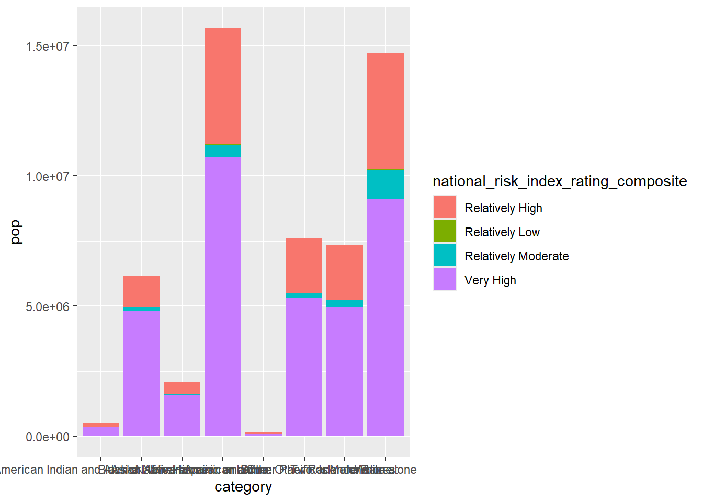
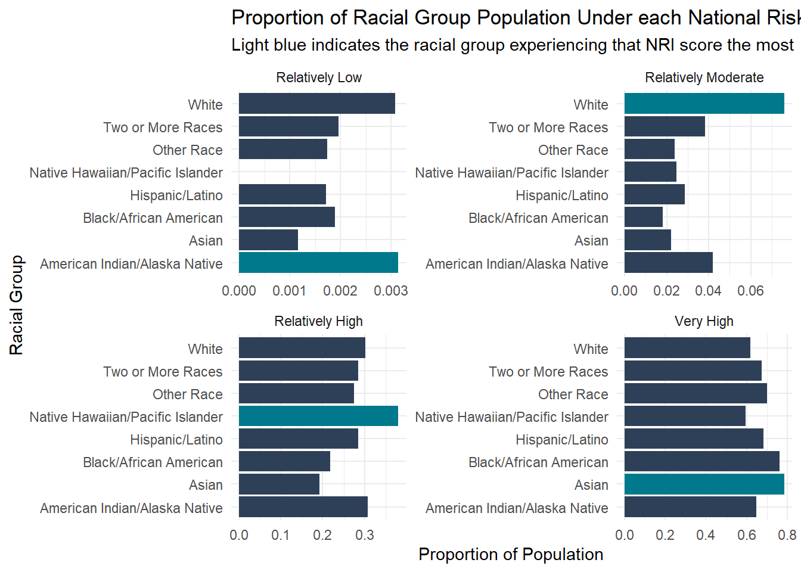

library(janitor)
library(tidyverse)
library(here)FEMA National Risk Index Scores by Racial Demographics
In this project, we will be working with data from the Federal Emergency Management Agency (FEMA) Resilience Analysis and Planning Tool (RAPT). This tool has more than 100 layers of social data like population, infrastructure and hazards. We will also be working with The American Community Survey (ACS), a yearly updated dataset containing various demographic census information that can be easily accessed through different data tools.
We will be working with the National Risk Index (NRI) which provides information about which communities are at risk to 18 different natural hazards. Each community is assigned a risk rating based on annual expected loss, social vulnerability, and community resilience. These risk ratings are represented by percentile ranking among all communities at the same risk level. We also work with the US Census Bureau’s American Community Survey (ACS). These data are collected at 1 and 5 year intervals to collect census data for communities such as social, economic, housing, and demographic data. We will be working with data on racial demographics, population, and county information. We will use NRI and ACS data to answer the following question:
“How does climate hazard risk exposure vary across racial / ethnic groups in California?”
Load libraries
Step 1: Read in data
#....Step 1a: see all available ACS variables + descriptions.....
# acs_vars <- tidycensus::load_variables(year = 2023,
# dataset = "acs1")
#
# #..............Step 1b: import race & ethnicity data.............
# race_ethnicity <- tidycensus::get_acs(
# geography = "county",
# survey = "acs1",
# # NOTE: you may not end up using all these variables
# variables = c("B01003_001", "B02001_002", "B02001_003",
# "B02001_004", "B02001_005", "B02001_006",
# "B02001_007", "B02001_008", "B03002_012",
# "B03002_002"),
# state = "CA",
# year = 2023) |>
# # join variable descriptions (so we know what's what!)
# dplyr::left_join(acs_vars, by = dplyr::join_by(variable == name))
#
# #.................Step 2: write ACS data to file.................
# readr::write_csv(race_ethnicity, here::here("data", "ACS-1yr-2023-county-race-ethnicity.csv"))
#..................Step 3: read in your CSV file.................
race_ethnicity <- readr::read_csv(here::here("data", "ACS-1yr-2023-county-race-ethnicity.csv")) %>%
clean_names()
# read in NRI data
# here function did not work here, so just read in file path
nri <- read_csv("data/National_Risk_Index_Counties.csv") %>%
clean_names() %>%
filter(state_name == "California")Step 2: Combine racial data with NRI scores
# separate county names for joining
race_ethnicity$county_name <- forstringr::str_extract_part(race_ethnicity$name, before = TRUE, pattern = " County, California")
# pull out race information into its own column
race_ethnicity$category <- forstringr::str_extract_part(race_ethnicity$label, before = FALSE, pattern = "Estimate!!Total:!!")
# rename NAs back to "Total Population"
race_ethnicity <- race_ethnicity %>%
mutate(category = ifelse(is.na(category), "Total Population", category))
# join on state name and county
nri_ethnicity <- left_join(race_ethnicity, nri, by = "county_name") %>%
# remove unwanted columns
select(county_name, state_name, estimate, category, national_risk_index_rating_composite, national_risk_index_score_composite) %>%
filter(category != "Not Hispanic or Latino:",
category != "Total Population")Step 3: Exploratory plotting
# population per racial category
race_pop <- nri_ethnicity %>%
group_by(category) %>%
summarise(pop = sum(estimate))
# prepare data basic plotting
nri_race_plot <- nri_ethnicity %>%
group_by(category, national_risk_index_rating_composite) %>%
# calculate counts and total population
dplyr::summarise(n = n(),
pop = sum(estimate),
.groups = "drop") %>%
# make categorical variables factors
mutate(rating = as.factor(national_risk_index_rating_composite),
category = as.factor(category))
# try heatmap
ggplot(nri_race_plot, aes(x = as.factor(national_risk_index_rating_composite), y = as.factor(category), fill = pop)) +
geom_tile()
# try stacked bar plot
ggplot(nri_race_plot, aes(x = category, y = pop, fill = national_risk_index_rating_composite)) +
geom_bar(stat="identity")
# try faceted waffle chart
# ggplot(nri_race_plot, aes(fill = category, values = pop)) +
# geom_waffle()
# does not work on this version of R! :(Of the 3 charts (heatmap, waffle, and barplot), the waffle chart may be the most aesthetically interesting to assess the differences in risk index among racial groups. Unfortunately, the {waffle} package no longer works for this version of R, so we will choose another plot type.
Step 4: Finalize visualization
For comparing the amount of each racial group is in each risk index rating category, I think the stacked bar plot is the easiest to interpret. For better comparisons, we will normalize the bar plot so we can compare between racial groups and make the plot look nicer.
# normalize by population size
nri_race_bar <- nri_race_plot %>%
group_by(category) %>%
dplyr::mutate(ratio = pop / sum(pop)) %>%
ungroup() %>%
# find racial group in each category with max percentage
group_by(rating) %>%
dplyr::mutate(max = ratio == max(ratio))
# relevel risk index to show up in facet in correct order
ref = c("Relatively Low", "Relatively Moderate", "Relatively High", "Very High")
nri_race_bar <- nri_race_bar %>%
mutate(rating = fct_relevel(rating, ref))
# dodged bar plot
ggplot(nri_race_bar, aes(y = category, x = ratio, fill = max)) +
geom_bar(stat="identity") +
labs(x = "Proportion of Population",
y = "Racial Group",
title = "Proportion of Racial Group Population Under each National Risk Index (NRI) Score",
subtitle = "Light blue indicates the racial group experiencing that NRI score the most") +
# facet by NRI score
facet_wrap(~rating, scales = "free") +
scale_fill_manual(values = c("#2e4057", "#00798c")) +
theme_minimal() +
# adjust y axis labels
scale_y_discrete(labels = c("American Indian/Alaska Native", "Asian", "Black/African American", "Hispanic/Latino", "Native Hawaiian/Pacific Islander", "Other Race", "Two or More Races", "White")) +
# remove legend
guides(fill = "none")
Step 5: Conclusions
- What are your variables of interest and what kinds of data (e.g. numeric, categorical, ordered, etc.) are they (a bullet point list is fine)?
- Racial groups : categorical
- Population size : numeric
- National Risk Index Rating : Ordered categorical
- How did you decide which type of graphic form was best suited for answering the question? What alternative graphic forms could you have used instead? Why did you settle on this particular graphic form?
I created a few exploratory plots (heatmap, stacked bar) and attempted to make a waffle chart and wordcloud. Unfortunately the packages for waffle charts and wordcloud were not compatible for my version of our, so I chose between heatmap and bar plots based on what I thought was easiest to see the trends and within my time constraints. I attempted to make a marimekko chart as well, but realized it did not quite fit the data I was plotting.
- Summarize your main finding in no more than two sentences.
Population size varies greatly between NRI scores, with a majority experiencing “very high” conditions. When comparing racial groups to each other within a NRI score, each NRI score has much different variation among racial groups, with some scores varying greatly between racial groups and others being relatively consistent among racial groups. Certain racial groups experience certain NRI scores the most, but they are different for each NRI score indicating some groups may be disproportionately experiencing high NRI risk scores.
- What modifications did you make to this visualization to make it more easily readable?
I updated theme for less background and visual noise, updated axes labels and y-axis tick labels that were accurate to the data being presented, and a title with a brief description. I also updated the colors to highlight the racial group that has the highest proportional population in that NRI score.
- Is there anything you wanted to implement, but didn’t know how? If so, please describe.
Beyond wanting to create a waffle chart or heatmap that were R package/version issues, I would have liked to better represent the variation within one racial group. A stacked bar plot was difficult to compare sizes of bars, and faceting 8 times for each racial group was too visually hectic. I would have liked to represent counties as well, given that not every county has the same proportion of racial groups. Finally, it would’ve been great to order each facet from highest to lowest, but I don’t think that is possible with y-axes being the same. Perhaps with free scales, but I wasn’t sure and didn’t have the time to investigate fully!